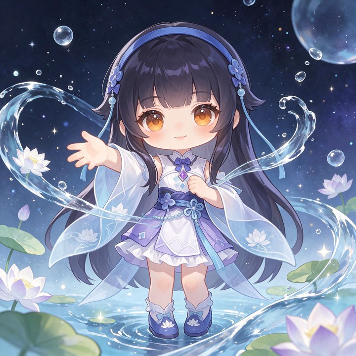
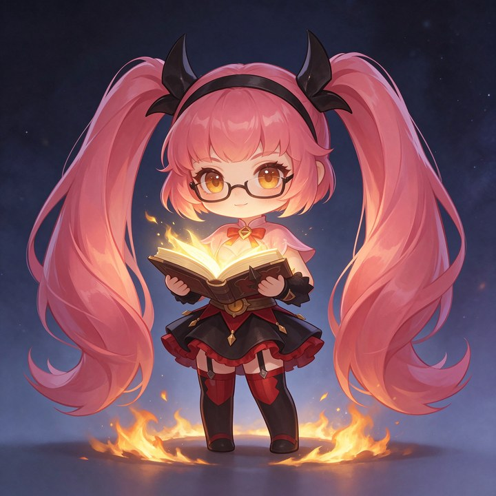
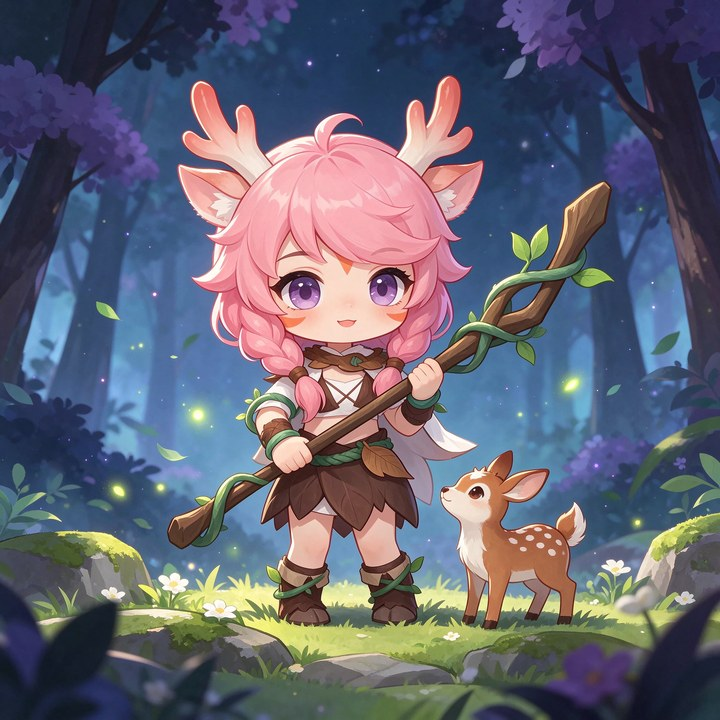
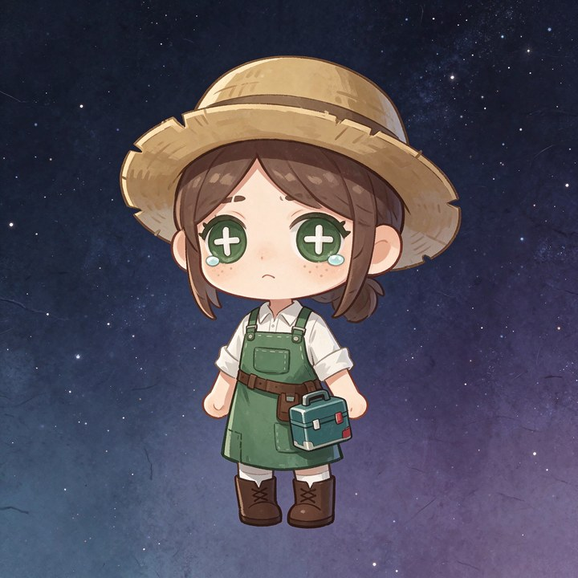
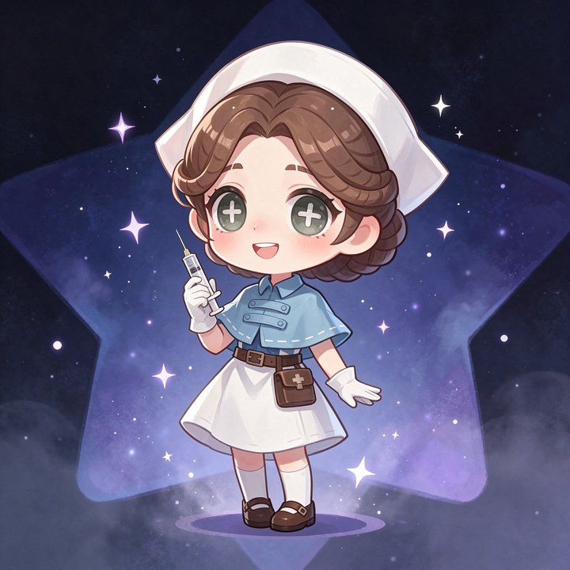
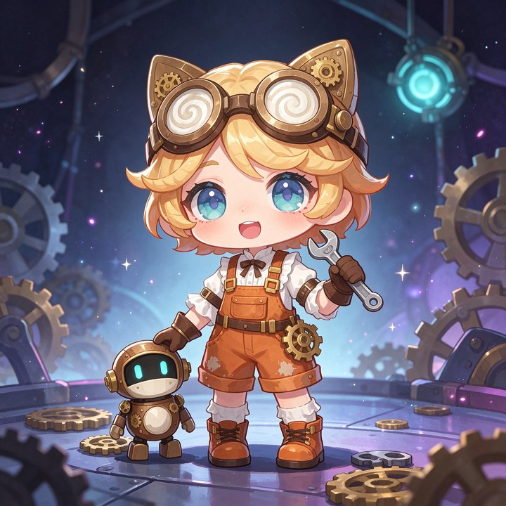
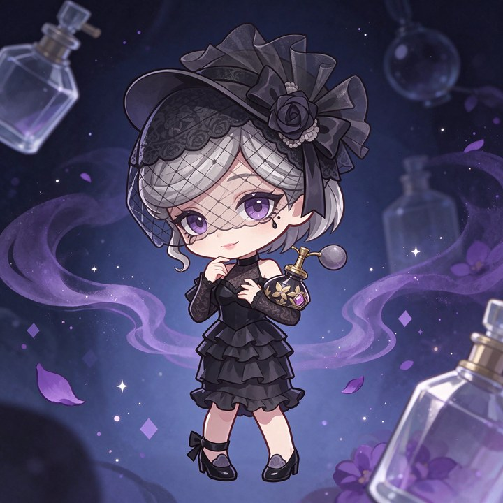
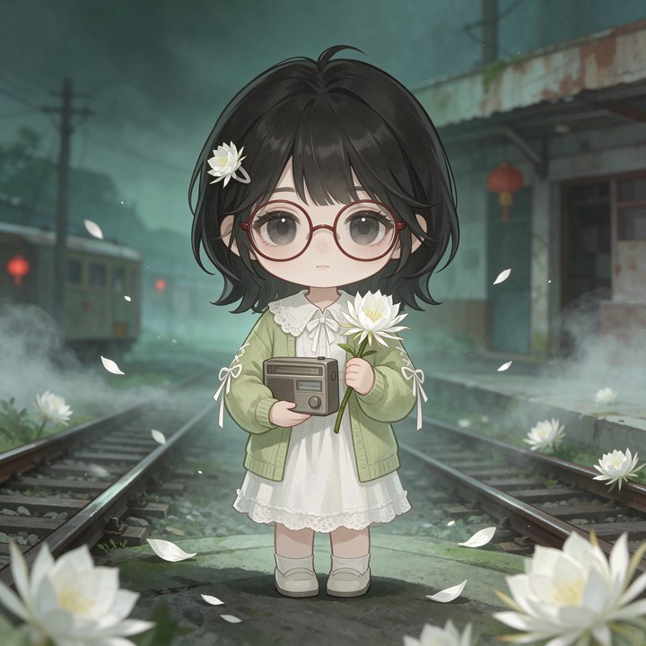

王者荣耀
西施
水波、莲花和一场安静的相遇。
SPIRIT HOUSE · 同人Q版
首批先放 8 个来自热门游戏的 Q 版伙伴。点开卡片就能摸摸她、喂星糖、陪她玩；亲密度只存在你自己的浏览器里，不收费，也不上传。

水波、莲花和一场安静的相遇。

粉色双马尾、圆眼镜，还有一本会发光的书。

鹿角、森林和一只跟着她的小鹿。

草帽、工具箱，还有一句“慢慢来”。

浅蓝护士服，和一句“别紧张”。

护目镜、齿轮，还有会走路的小玩偶。

黑礼帽、香水瓶，和一点紫色雾气。

圆框眼镜、白昙花发夹，和旧车站的梦。
首批先放这 8 个；下一个由你来点。
王者荣耀 · 幻纱之灵
同人 Q 版展示，非官方原画；亲密度只保存在本机浏览器。